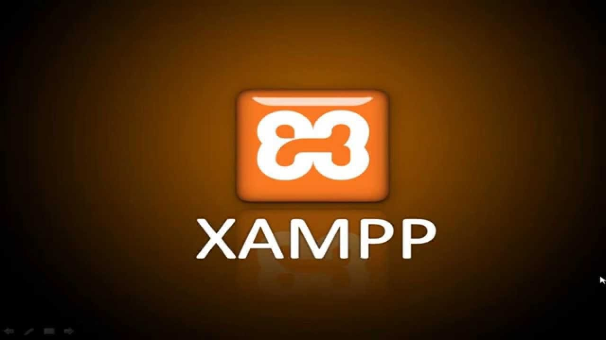

XAMPP es un paquete de software libre, que consiste principalmente en el sistema de gestión de bases de datos MySQL,
el servidor web Apache y los intérpretes para lenguajes de script PHP y Perl. El nombre es en realidad un acrónimo: X
(para cualquiera de los diferentes sistemas operativos), Apache, MariaDB/MySQL, PHP, Perl. A partir de la versión 5.6.15,
XAMPP cambió la base de datos MySQL por MariaDB, un fork de MySQL con licencia GPL.
El programa se distribuye con la licencia GNU y actúa como un servidor web libre, fácil de usar y capaz de interpretar páginas dinámicas.
A esta fecha, XAMPP está disponible para Microsoft Windows, GNU/Linux, Solaris y Mac OS X.
